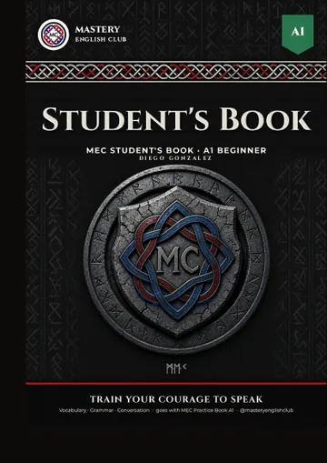
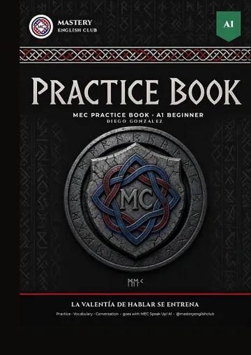

Student's Book A1
El libro de clase del nivel A1: vocabulario, gramática y actividades de conversación para cada subnivel.
Disponible para estudiantes.
En MEC creemos que el inglés se aprende usándolo. Por eso cada clase está pensada para que hables mucho: entre más hablas, más practicas, y cada error se convierte en una oportunidad de mejorar. Nuestro objetivo principal es que ganes confianza y pierdas el miedo a comunicarte.
El programa tiene 5 niveles, alineados con el Marco Común Europeo de Referencia: A1, A2, B1, B2 y C1. Cada nivel se divide en 5 subniveles (por ejemplo, A1.1 a A1.5), para que avances paso a paso y veas tu progreso de cerca.
Cada subnivel tiene 6 clases:
Al final de cada nivel hay 2 clases de repaso y un proyecto integrador para consolidar lo aprendido.
| Nivel | Etapa | Clases de subniveles | Repasos | Total |
|---|---|---|---|---|
| A1 | Básico | 5 × 6 = 30 | 2 | 32 |
| A2 | Elemental | 5 × 6 = 30 | 2 | 32 |
| B1 | Intermedio | 5 × 6 = 30 | 2 | 32 |
| B2 | Intermedio alto | 5 × 6 = 30 | 2 | 32 |
| C1 | Avanzado | 5 × 6 = 30 | 2 | 32 |
| Programa completo A1 a C1 | 160 | |||
Recibes feedback personalizado y motivador: lo que haces bien, lo que puedes mejorar y tu siguiente meta. Cada mes te mostramos tu progreso: cuánto hablas en clase, tu fluidez y el vocabulario nuevo que usas.
Cada nivel cuenta con su libro y su guía de ejercicios, alineados con las clases, para practicar dentro y fuera del aula.
También tenemos un programa para niños de 6 a 12 años, con la misma estructura, clases lúdicas, canciones, juegos y misiones para que los más pequeños hablen inglés con confianza.

El libro de clase del nivel A1: vocabulario, gramática y actividades de conversación para cada subnivel.
Disponible para estudiantes.

La guía de ejercicios para practicar fuera de clase y reforzar lo aprendido.
Disponible para estudiantes.